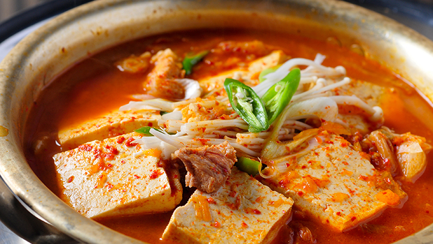

Kimchi Jigae (Kimchi Stew)
Kimchi Jjigae, or Kimchi Stew, is a beloved Korean comfort food. It's a hearty and spicy soup made primarily from kimchi (fermented cabbage) and often includes pork or tofu, onions, garlic, and green onions. The base of the soup is rich with flavors from gochujang (Korean red chili paste) and gochugaru (Korean red chili flakes), which give it its signature kick. Kimchi Jjigae is traditionally simmered until all the ingredients meld together, creating a deeply flavorful and warming dish. It's commonly served with a bowl of steamed rice and is perfect for colder days or when you're craving something with a bit of heat. The combination of tangy, spicy, and savory flavors makes it a staple in Korean cuisine.

Ingredients
- 2 cups well-fermented kimchi, chopped
- 1/2 cup kimchi juice
- 200g pork belly or tofu, sliced
- 1 medium onion, sliced
- 2 green onions, chopped
- 2 cloves garlic, minced
- 1 tablespoon gochujang (Korean red chili paste)
- 1 tablespoon gochugaru (Korean red chili flakes)
- 1 tablespoon soy sauce
- 1 teaspoon sugar
- 4 cups water or broth (beef, chicken, or vegetable)
- 1 pack of enoki mushrooms (optional)
- 1 block of tofu, cubed (optional)
- Salt and pepper to taste
- Sesame oil and sliced green onions for garnish
Instructions:
- Prepare the base:
- In a large pot, add the chopped kimchi, kimchi juice, pork belly (or tofu), onion, garlic, gochujang, and gochugaru. Mix well.
- Add the liquid:
- Pour in the water or broth. Add soy sauce and sugar. Stir to combine all ingredients.
- Cook the stew:
- Bring the mixture to a boil over medium-high heat, then reduce the heat to medium-low and let it simmer for about 20-30 minutes. This allows the flavors to meld together.
- Add mushrooms and tofu:
- If using enoki mushrooms and tofu, add them to the pot during the last 10 minutes of cooking. Simmer until the tofu is heated through and the mushrooms are tender.
- Season and serve:
- Taste the stew and adjust the seasoning with salt and pepper if needed. Drizzle a little sesame oil on top and garnish with sliced green onions before serving.
Enjoy your delicious and comforting Kimchi Jjigae! 🥢🍲